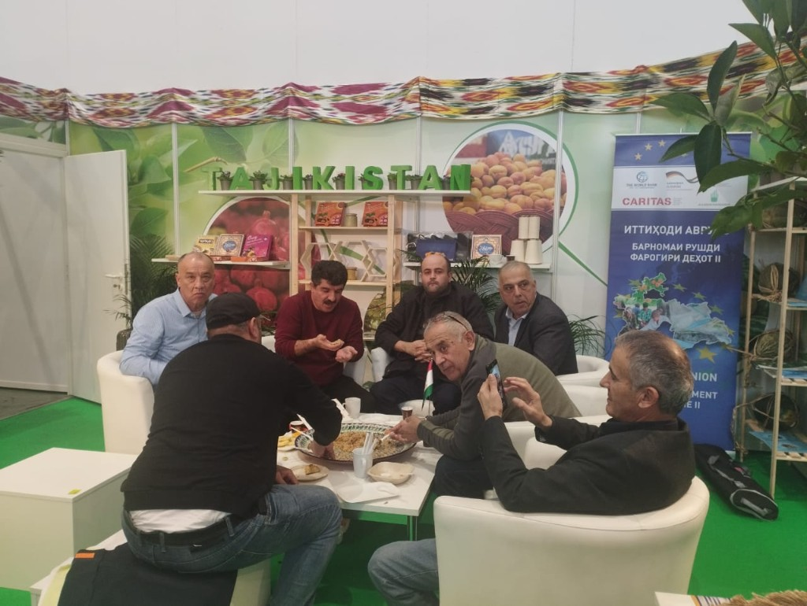
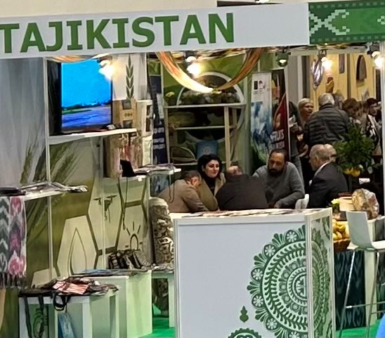
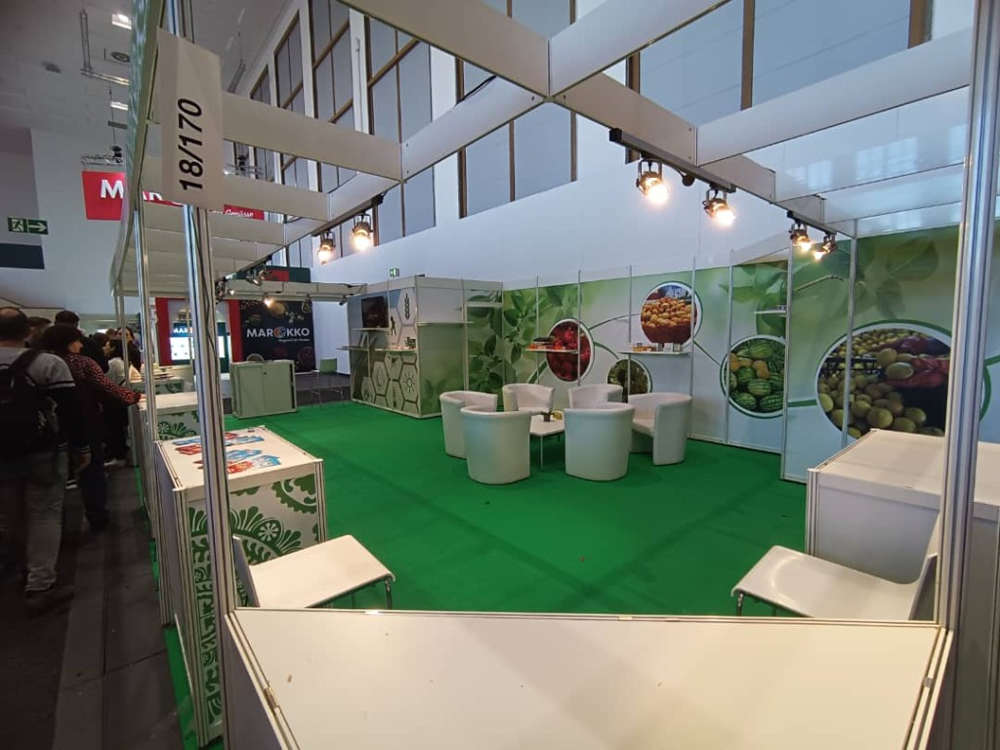
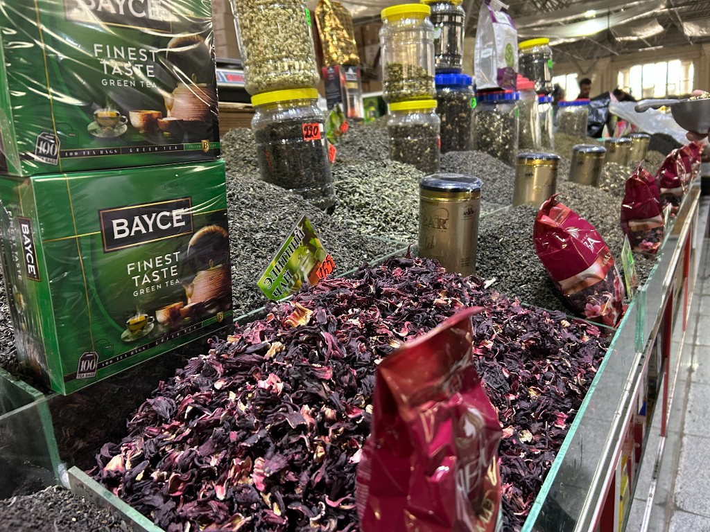

Q I 2024 CETKA updates
INTERNATIONAL GREEN WEEK
We are happy to let you know that CETKA took part in the Berlin International Green Week, which took place from January 19–28, 2024. CETKA was able to spread knowledge about women's projects taking place in Tajikistan's rural areas by showcasing the items. All interested guests received informative booklets on women-led activities in rural areas in Tajikistan. During Green Week, a variety of textile embodiments were also on exhibit to highlight manifestations created by Tajik women artisans.
The non-governmental organization "Network of Opportunities" (called СЕТКА) is socially focused and has no commercial interest. The NGO was created on a volunteer basis solely to support women living in rural areas with limited income and opportunities. The reason for creating the initiative is humanitarian motives, including the need to foster conditions that will enable rural women to realize their professional potential.




Q IV 2023 CETKA updates
Women's Entrepreneurship Network EXPO2023
THE CETKA was able to attend the EXPO 2023 which brought together women entrepreneurs, investors, and business partners from across Europe and Central Asia for the biggest networking event for women-led businesses in the region. The event engaged world-renowned experts to discuss digital marketing, financing, gender-responsive procurement, and pitching.
Mrs. Zarina Ruzmatova representative, spoke on behalf of CETKA activities which is focused on providing income opportunities to rural women in Tajikistan. Training on leading advanced farming taking into account climate change aspects, digital literacy in financing agriculture, and entrepreneurship opportunities tailored to the specific needs of Tajik rural women attracted the attention of many participants. As a result, CETKA established a partnership with implementing agencies in Central Asia.